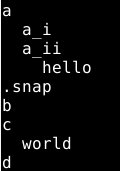
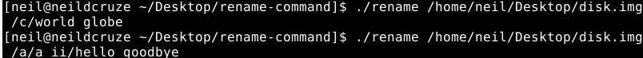
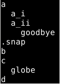

Renaming Files in UFS2 : The Hard Way
Systems Programming
Unix
Writing a C program that traverses the structures used to represent files (and directories) in UFS2 (Unix File System) and renames a file/directory
Understanding UFS2 and File Renaming
Github: dcruzeneil/rename-command
The UFS2 (Unix File System) is supported by many Unix-based operating systems. In this project, I wrote a C program to traverse the structures used by UFS2 to represent files and directories, focusing on renaming files. This process provided valuable insights into how UFS2 manages file names, permissions, file contents, and their representation on the disk.
This blog post is not a comprehensive breakdown of UFS2, but it covers some key concepts:- Superblock: This structure contains metadata about the entire file system, such as fragment size and the location of the root inode.
- Directory Structures: Each directory structure points to an inode (except the root directory, which just has an inode). It contains the inode number, file/directory name, and file type (directory, file, or other).
- Inode: Each file and folder has an associated inode that stores permissions and other metadata. For folders, the inode’s data blocks point to other directory structures for the files/folders within that inode. For files, the data blocks point to the actual data.
Data blocks refer to 32K chunks of memory on the disk.
Demonstration of the Rename Command
Before renaming the files using my command, I ran my implementation of fs-find to list all the files in the raw image of a disk partition. Here is the output:

Next, I ran the rename command:

Finally, here is the output of fs-find after executing the rename command:
